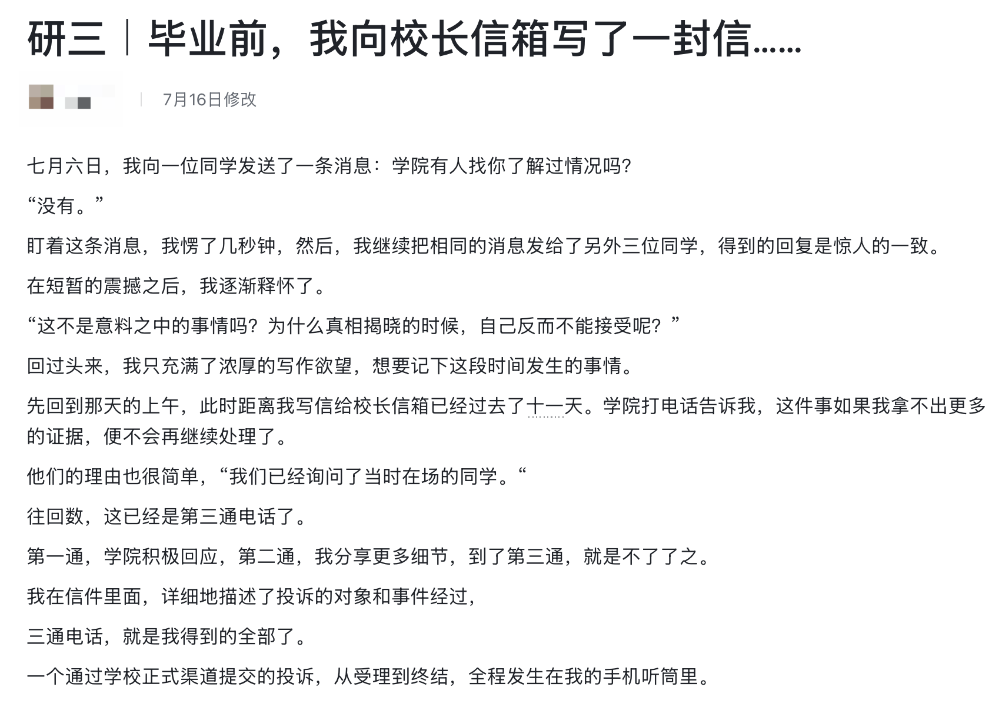
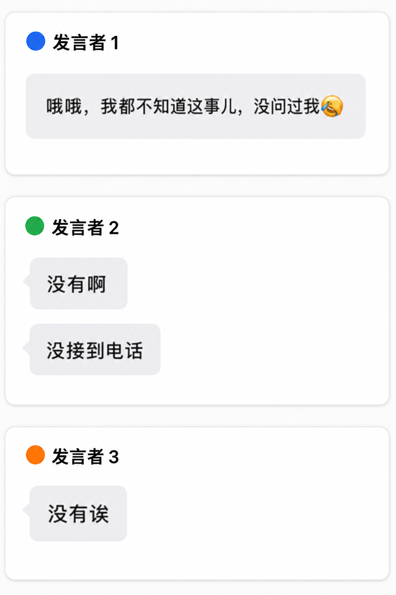
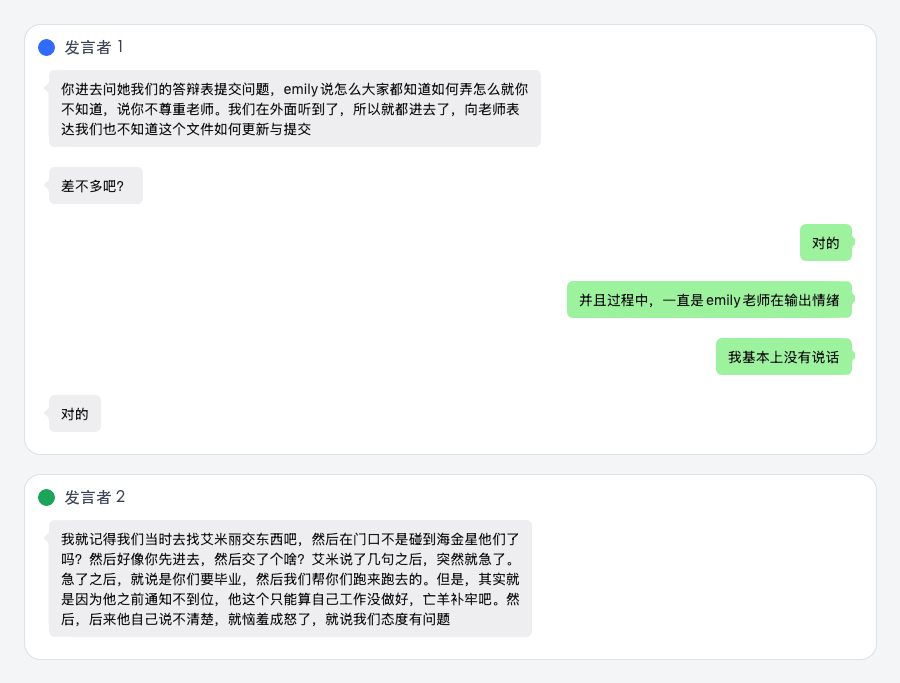
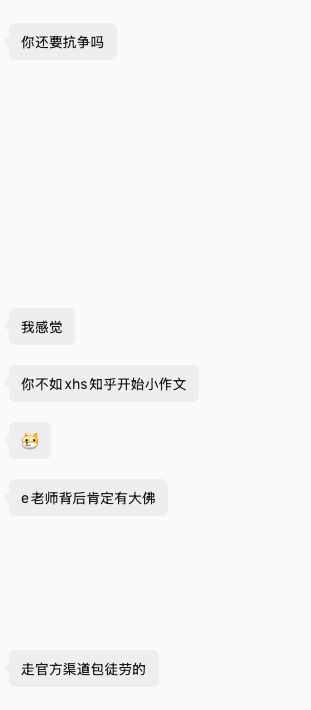

有些话，我本可以不说，埋在心里一辈子，但我不得不说。
尽管事情已经过去了快三个月，但那些经历依旧如影随形地跟着我。每当想起，内心依旧充斥着愤怒，整个人坐立不安，始终无法平静。
事发之初，我就曾想要写一篇文章，来表达我的愤怒。我想过许多书写方式——悬疑式、陈述式抑或是声讨式，但无论哪种，最后都被放弃了。不知道出于什么原因，我始终无法满意自己写出来的内容。

于是愤怒就这样悬置在了心中。
我对自己的要求太高了，所以每到我想要说些什么的时候，我总是浅尝辄止，写了一部分又会全部删去，始终无法写出我满意的文章。我中途放弃，然后继续让其深埋在我的心中。
情绪不会凭空出现，更无法凭空消失，它就在我心里持续发酵，并时不时出来折磨着我。我想要把这件事闹大，我想要让所有人知道这件事，我想要让别人看到我的委屈和愤怒，我想要让实施暴力的人付出应有的代价。
更深的是，我恨他们毁掉了我心中对正义的朴素追求，我恨他们摧毁了我对管理机构所有的信任，我恨他们让我深陷痛苦的囹圄，而我又无计可施。所以，愤怒最后导向了我自己——我恨自己如此无力，如此羸弱。
我想，如果我不写这篇文章，我以后也不知道该写什么文章，我之前写的内容也会一笔勾销。这是我生命中非常重要的一件事，它不应该，也不允许被如此轻易地撂在一旁。
身边的人常问我：这样做的意义是什么呢？这可是你的母校，撕破脸皮对所有人都不好。
不知从何时起，我们似乎在心中就确认了一个逻辑：你待过的地方和你之间始终存在裙带关系。这套逻辑大大削减了人的主体性，我的人生不需要任何人、任何机构来定义。
我不是一个能被理性话语安慰的人。我是一个有着强烈信念的人，我是一个无法妥协之人，如果我选择了沉默，那我相当于选择了另一种人生，那样或许会很好，但那不是我。
此时此刻，没人支持我，我也要做自己最后的支持者，发出一点自己的声音，把想说的话都说出来，毕竟说出来，本身就是勇气的一部分，哪怕没人看到。
我想问西安交通大学网络空间安全学院——
为什么你们设置的毕业程序如此不清晰？
许多规定在一周内反复调整好几次，所有学生都在为你们的不严谨买单，白白增添了工作量，最后却得不到一句道歉。
为什么你们安排的教务老师难以胜任岗位职责且态度恶劣？
教务老师Emily樊荣回复群内同学提问不及时，也不给出明确指引。面对同学线下的提问，常常指责对方没有认真阅读群内消息，却不反省自己发布消息的混乱，她无法区分个人情绪与工作职责，将情绪带入与同学的沟通中，以自身职务之便对学生进行情感施压。
为什么你们的通知无法提前传达，给学生留够充足的准备时间？
从中期答辩开始就是答辩前两天才通知，学生被迫在短暂的时间内准备材料，信息的获取只能靠师兄师姐的口口相传，教务部门职能失效，教务老师尸位素餐，无法为学生提供基本保障。
为什么教务老师Emily樊荣对自己的工作内容不清晰、屡屡犯错但未受到任何处罚？
樊荣长期担任教务老师，负责网安学院整体的教务工作，这几年以来，在日常的教务工作上始终存在纰漏，未尽到自己应有的责任。在毕业答辩这样的重要节点上，自己都无法为自己说的话负责。这不仅是她个人问题，背后的网安学院也难辞其咎，培训体系与制度不规范恐怕是一直以来的问题，网安学院的管理体系的合理性让人深思。
为什么西安交通大学的校长信箱形同虚设，学生提出自己的诉求，却得不到任何有效回应？
自我向校长信箱反馈了网安学院的教务问题后，网安学院的领导看似在积极响应，实则反复在用口头回应搪塞，拿不出来纸质处理说明和书面结果，到了最后，我得到的回复就是一句轻飘飘的：「我们严肃思考了你这个问题，并会加强对学院的管理，感谢同学的批评。」
——言外之意不过是，我们都知道你说的话了，你还不满足吗？你还想怎么样？
学院，乃至学校的检举流程并不透明，并没有针对同学提出的问题和质疑分别给出处罚结果，口头说明难以服众，只会让人怀疑冰面之下的暗流涌动。
为什么网安学院的领导班子要撒谎回避问题？
学院的两位管理老师口口声声说询问了当时在场的同学和老师，证明我当时没有受到樊荣的压迫，反过来要求我给出证据。
首先，我询问了当时在场的所有同学，无一例外都说没有收到领导老师的询问，你们为什么要撒谎？
其次，在你们向我索要证据时，也并未出示相应的对话记录支撑你们所谓的调查。
最后，我这里给出我收集到的证据：在场的两位同学还原了当时的场景，也算还了我一个"清白"。


我只是想要一份道歉，但学院的处理态度始终顾左右而言他，实在让人好奇其动机。我是抱着对学院、学校的信任，作为西安交通大学的校友合理地提出问题，结果得到如此的回应，实在让人寒心。
仔细想想，比起樊荣当时的所作所为，真正让我道心破碎的是之后发生的一切。
我选择相信制度，向学院反映问题，向校长信箱写信，走的是最正规的路。但我得到的，是一场二次伤害。学院不去追究施害者的责任，反过来审问我；不出示调查记录，反过来要求我自证清白；不给出书面处理结果，只用口头敷衍反复搪塞。本应保护学生的机构，变成了新的施害者。
如果所有诉诸于监管部门的请求是在强调一个完美受害者的话，那制度从未在保护受害者，只是再进一步压缩其生存空间。受害者感受到的不是安全，而是羞耻。弱者只会噤声，因为他知道，表达本身，就是一种冒犯。
可以想象，在这样的权力体系下，到底有多少研究生在被压迫，多少声音在被吞没。

研究生体系从根上就存在导师对学生的权力压迫，学校作为第三方管理机构，都无法保障学生的权益。这套制度的根已经在慢慢腐朽，研究生体系的合理性需要在社会层面上被重新审视。
我们走过的弯路，甚至受到过的伤害，不可以不明不白地，被时间的过去式踏平。允许质疑，允许诘问，从错误中总结教训且不重蹈覆辙，才对得起每颗还有良知、仍有希望的心。
我这篇文章就是在说暴言，就是在发泄情绪。我再说最后一句暴言，如果学院不考虑重新审视自身，继续自我麻痹，那它未来的发展，我也可想而知。后人哀之而不鉴之，亦使后人而复哀后人也。
未来，我也不会再向西安交通大学校长信箱投递任何一封信件。我对这所学校已经失望透顶。并且这篇文章结束了，我也不会再写类似的文章，但这并不代表这件事在我这里就结束了——我会永远铭记这件事，也永远不会原谅这所学校。
我将把这件事牢牢记在心里，时刻提醒自己。
请捍卫自己愤怒的权利，不要让自己麻木，不要让自己成为自己最讨厌的人
参考
- 不原谅也没关系 — 关于愤怒与不原谅的正当性